Rozliczanie kosztów
Rozliczanie kosztów łączy zakupy z pojazdem, kierowcą, oddziałem, MPK i wspólną grupą produktu. Dzięki temu możesz analizować wydatki całej floty niezależnie od tego, czy dane pochodzą z UTA, BP, Orlen, czy z faktury kosztowej.
O rozliczaniu kosztów
Podstawowym miejscem pracy jest wspólna lista Flota → Karty paliwowe → Transakcje paliwowe. Pokazuje ona transakcje wszystkich dostawców w jednym układzie. DataDrive zachowuje też dane źródłowe, aby można było sprawdzić import bez mieszania technicznych kolumn z codzienną pracą.
Każda transakcja ma dane handlowe, źródło oraz wymiary analityczne. Dane handlowe opisują zakup, a wymiary odpowiadają na pytania: kto kupił, dla którego pojazdu, oddziału i MPK oraz do jakiej grupy należy produkt.
Źródła danych: UTA, BP i Orlen
Wspólna lista może zawierać dane z UTA, BP i Orlen. Każdy dostawca używa własnych nazw produktów, numerów transakcji i oznaczeń stacji. DataDrive przenosi wspólne informacje do tych samych pól, a oryginalne wartości zostawia w widoku źródłowym.
- UTA
- Transakcje mogą zawierać identyfikator UTA, typ transakcji, numer faktury, kod i grupę produktu, kraj oraz identyfikator stacji. Dane sprawdzisz w widoku Źródło UTA.
- BP
- Import zachowuje między innymi klucz importu BP, centrum kosztowe, opis pojazdu lub użytkownika oraz nazwę i lokalizację stacji.
- Orlen
- Import przechowuje numer faktury, identyfikator i nazwę stacji, kod karty, EAN, numer rejestracyjny oraz opis produktu.
Aby sprawdzić dane konkretnego dostawcy, wykonaj następujące kroki:
- Rozwiń w lewym menu Flota → Karty paliwowe → Analiza importu.
- Otwórz Źródło UTA, Źródło BP albo Źródło Orlen.
- Porównaj wartości źródłowe z pojazdem, stacją i produktem przypisanym przez DataDrive.
- Wróć do Transakcje paliwowe, gdy zakończysz kontrolę importu.
Widok źródłowy pokaże techniczne pola dostawcy. Do filtrowania, analizy i dalszego rozliczania używaj wspólnej listy transakcji.
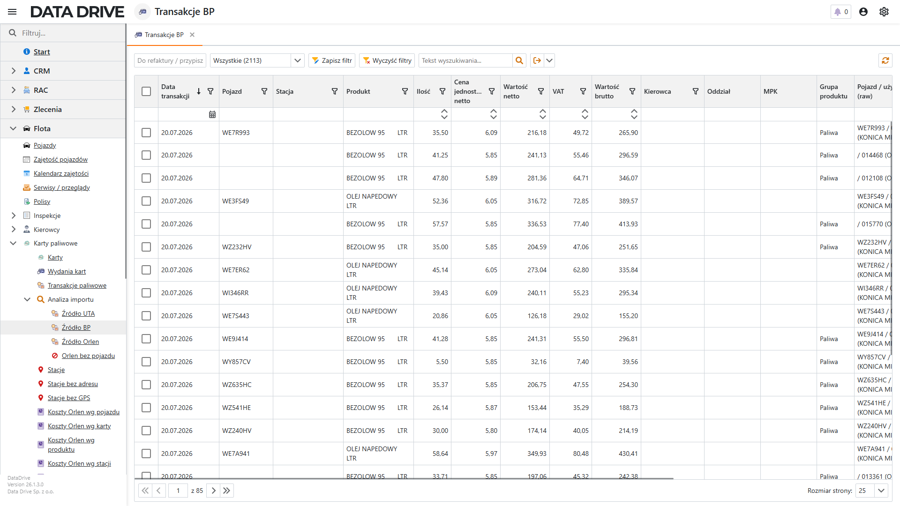
Przeglądanie transakcji
Wspólna lista zaczyna się od daty, pojazdu i stacji. Dalej pokazuje produkt, ilość, cenę jednostkową, wartości netto, VAT i brutto. Po prawej stronie znajdziesz dostawcę oraz wymiary do analizy.
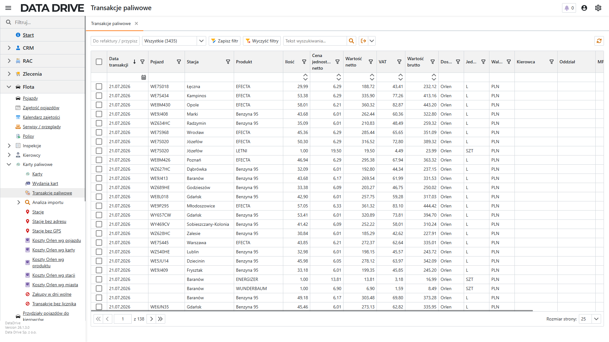
Aby znaleźć i sprawdzić transakcję, wykonaj następujące kroki:
- Przejdź do Flota → Karty paliwowe → Transakcje paliwowe.
- Wpisz szukaną wartość w wierszu filtrów pod nagłówkiem kolumny, na przykład numer rejestracyjny, nazwę stacji albo produkt.
- Kliknij nagłówek kolumny Data transakcji, aby zmienić kolejność wyników.
- Otwórz wybrany wiersz, aby zobaczyć wszystkie dane transakcji.
Otworzy się karta transakcji. Pierwsza zakładka zawiera dane wspólne i wymiary analityczne, a zakładka Dane dostawcy pokazuje pola charakterystyczne dla UTA, BP albo Orlen.
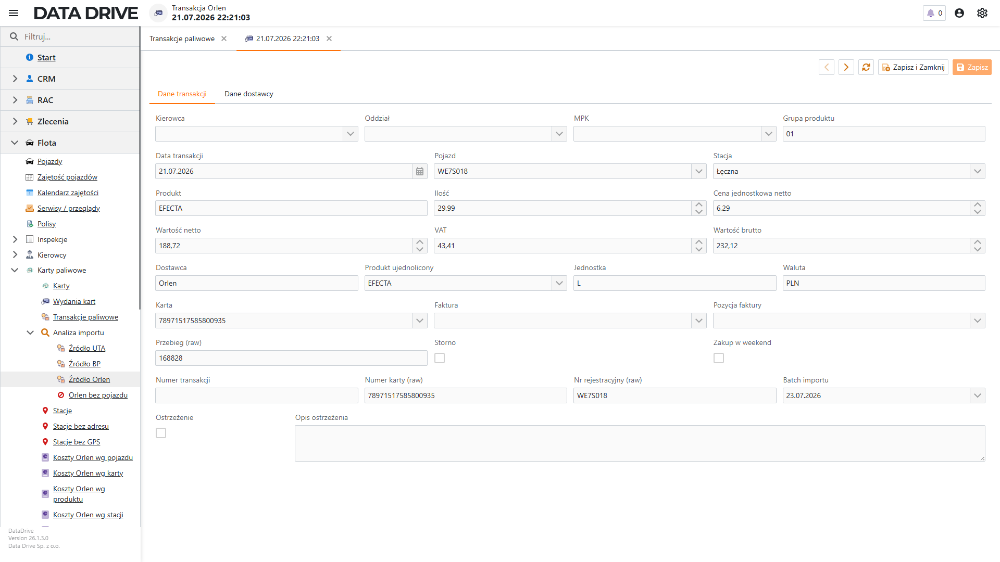
Przypisywanie wymiarów kosztowych
DataDrive wylicza część wymiarów z powiązanych kartotek. Dzięki temu nie musisz wpisywać oddziału i MPK osobno w tysiącach transakcji.
- Pojazd
- Importer szuka pojazdu po numerze rejestracyjnym. Gdy go nie rozpozna, otwórz transakcję, wybierz Pojazd i zapisz.
- Kierowca
- Wynika z aktywnego wydania karty w dniu transakcji. Jeśli kierowca jest błędny, popraw osobę lub daty w Wydania kart.
- Oddział
- Wynika z działu kierowcy. DataDrive używa działu oznaczonego jako oddział albo jego jednostki nadrzędnej.
- MPK
- Najpierw pochodzi z pojazdu. Jeśli pojazd nie ma MPK, DataDrive używa domyślnego MPK karty paliwowej.
- Grupa produktu
- Pochodzi z produktu ujednoliconego, na przykład Paliwa.
Aby poprawić pojazd i wynikające z niego MPK, wykonaj następujące kroki:
- Otwórz transakcję na wspólnej liście.
- W polu Pojazd wybierz właściwy numer rejestracyjny.
- Kliknij Zapisz.
- Sprawdź pole MPK w sekcji wymiarów do analizy.
Transakcja zostanie powiązana z pojazdem, a MPK ustawi się według kartoteki pojazdu. Gdy zmienisz domyślne MPK pojazdu lub karty, odśwież listę i sprawdź wynik.
Lista „Koszty szczegółowo”
Lista Koszty szczegółowo zbiera pozycje wszystkich faktur kosztowych w jednym miejscu. Każdy wiersz jest pojedynczą pozycją dokumentu, dlatego może mieć własną kategorię, pojazd, dział, MPK i wymiary analityczne. To jest ekran, na którym opisujesz koszt tak, żeby raport potrafił go pogrupować.
Przejdź do Finansowe → Kosztowe → Koszty szczegółowo w lewym menu.
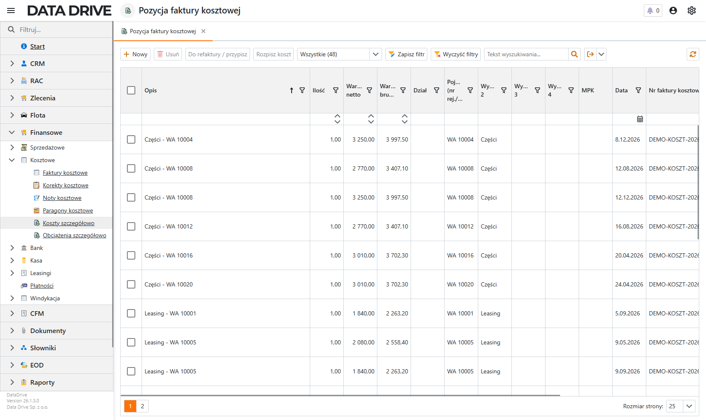
- Opis
- Nazwa pozycji z faktury dostawcy. Pozycje powstałe z rozpisania mają w opisie dopisek (część 1/3).
- Ilość
- Ilość z pozycji dokumentu. Po rozpisaniu kosztu suma ilości części odpowiada ilości źródłowej.
- Wartość netto, Wartość brutto
- Kwoty pozycji. To one trafiają do analiz kosztowych.
- Dział
- Jednostka organizacyjna odpowiedzialna za wydatek. Ustawia się przy rozpisaniu kosztu.
- Pojazd (nr rej./VIN)
- Pierwszy wymiar analityczny. Aplikacja wypełnia go numerem rejestracyjnym rozpoznanego pojazdu.
- Wymiar 2, Wymiar 3, Wymiar 4
- Dodatkowe wymiary do własnych podziałów firmy, na przykład projekt albo umowa.
- MPK
- Centrum kosztowe pozycji. Puste pole oznacza, że raport użyje MPK pojazdu, a gdy i tego brak — MPK z nagłówka faktury.
- Data
- Data transakcji pozycji, a gdy jej nie ma — data wystawienia dokumentu.
- Nr faktury kosztowej
- Numer dokumentu, z którego pochodzi pozycja. Pozwala wrócić do faktury źródłowej.
Pozycja faktury kosztowej
Kartę pozycji otwierasz dwuklikiem w wiersz listy. Znajdziesz na niej dane handlowe pozycji oraz sekcję Rozliczenie kosztu, w której opisujesz, kogo ten wydatek obciąża.
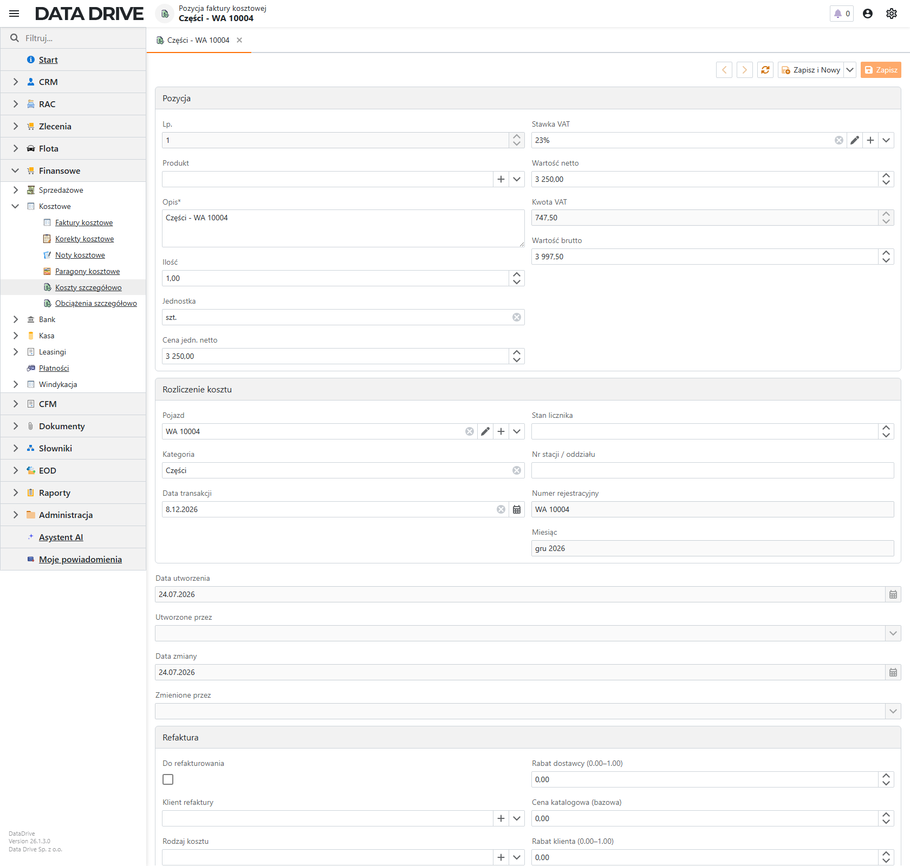
Pola sekcji Pozycja:
- Lp.
- Numer porządkowy pozycji w dokumencie.
- Produkt
- Pozycja z katalogu produktów. Puste pole oznacza koszt opisany wyłącznie tekstem.
- Opis
- Nazwa pozycji. Pole wymagane — bez niego pozycji nie zapiszesz.
- Ilość, Jednostka, Cena jedn. netto
- Dane ilościowe pozycji. Aplikacja wylicza z nich wartość netto.
- Stawka VAT
- Stawka ze słownika, na przykład 23%.
- Wartość netto, Kwota VAT, Wartość brutto
- Kwoty pozycji. Aplikacja przelicza je po zmianie ilości lub ceny.
Pola sekcji Rozliczenie kosztu:
- Pojazd
- Samochód, którego dotyczy koszt. To najważniejszy wymiar analityczny floty — bez niego koszt nie trafi do zestawienia pojazdu.
- Kategoria
- Rodzaj wydatku, na przykład Części, Leasing albo Myjnia. Kategorie pochodzą ze słownika kategorii kosztów.
- Data transakcji
- Dzień zakupu. Steruje przypisaniem kosztu do miesiąca w raportach.
- Stan licznika
- Przebieg pojazdu w dniu zakupu. Po zapisie aplikacja dopisuje go do historii przebiegów pojazdu.
- Nr stacji / oddziału
- Miejsce zakupu z danych dostawcy. Przydaje się przy reklamacjach i kontroli tankowań.
- Numer rejestracyjny
- Aplikacja wylicza to pole z pojazdu, a przy jego braku z danych importu. Służy do grupowania w tabelach przestawnych.
- Miesiąc
- Aplikacja wylicza etykietę miesiąca, na przykład gru 2026, z daty transakcji lub daty dokumentu.
Aby opisać pojedynczy koszt, wykonaj następujące kroki:
- Przejdź do Finansowe → Kosztowe → Koszty szczegółowo w lewym menu.
- Kliknij dwukrotnie wiersz z rozliczaną pozycją.
- W sekcji Rozliczenie kosztu wskaż Pojazd.
- Wybierz Kategorię odpowiadającą rodzajowi wydatku.
- Opcjonalnie uzupełnij Stan licznika i Datę transakcji.
- Kliknij Zapisz w prawym górnym rogu.
Pozycja zostanie powiązana z pojazdem i kategorią, a raporty kosztowe będą mogły grupować ją według obu tych wymiarów.
Przypisanie zbiorcze pojazdu i refaktury
Import z karty paliwowej potrafi zostawić kilkadziesiąt pozycji bez rozpoznanego pojazdu. Zamiast otwierać każdą z osobna, opisz je razem akcją Do refaktury / przypisz. Ustawiasz w niej pojazd, znacznik refaktury i procent obciążenia klienta dla wszystkich zaznaczonych pozycji naraz.
Aby opisać wiele pozycji jednocześnie, wykonaj następujące kroki:
- Przejdź do Finansowe → Kosztowe → Koszty szczegółowo w lewym menu.
- Zaznacz pola wyboru przy pozycjach, które mają dostać te same dane. Zaznacz co najmniej dwie.
- Kliknij Do refaktury / przypisz na pasku akcji.
- W oknie Ustaw dane / do refaktury wskaż Pojazd.
- Zaznacz Oznacz do refaktury, jeśli koszt ma zostać przeniesiony na klienta, i podaj Procent do refaktury.
- Kliknij OK.
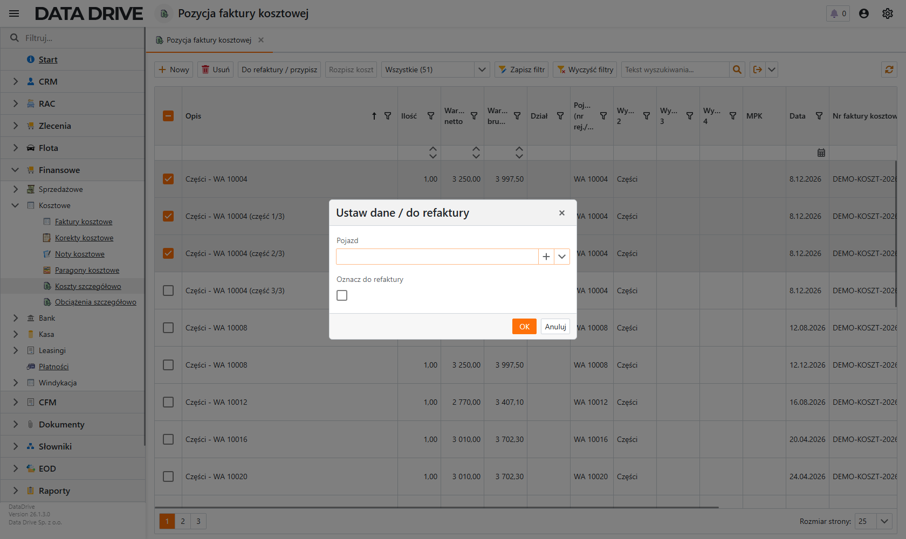
- Pojazd
- Samochód, który obciążają zaznaczone pozycje. Puste pole zostawia dotychczasowy pojazd bez zmian.
- Oznacz do refaktury
- Włącza przeniesienie kosztu na klienta. Znacznik działa tylko w jedną stronę — zaznaczenie go ustawia refakturę, a pozostawienie pustego nie zdejmuje jej z pozycji.
- Procent do refaktury (0.00–1.00)
- Udział kosztu przenoszony na klienta. Wartość 1,00 oznacza całość, 0,50 połowę.
Zaznaczone pozycje otrzymają wskazane dane, a aplikacja przeliczy kwotę do refaktury klienta.
Dlaczego tworzymy produkty ujednolicone
Dostawcy nazywają ten sam towar inaczej. Benzyna 95 może wystąpić jako BEZOLOW 95 w danych BP i EFECTA 95 w danych Orlen. UTA może przesłać jeszcze inną nazwę lub kod. Bez ujednolicenia raport potraktuje je jak oddzielne produkty.
Produkt ujednolicony łączy wiele nazw dostawców w jeden produkt, na przykład Benzyna 95. Dzięki temu:
- raport pokazuje jedną pozycję zamiast kilku nazw tego samego paliwa,
- wszystkie transakcje dostają wspólną grupę, na przykład Paliwa,
- kolejne importy z UTA, BP i Orlen korzystają z zapisanego mapowania,
- porównanie zużycia i wartości między dostawcami staje się wiarygodne.
Tworzenie produktu ujednoliconego
Najpierw wybierz produkty, które oznaczają ten sam towar. Porównaj rodzaj paliwa, jednostkę oraz kod lub opis dostawcy. Nie łącz produktów tylko dlatego, że mają podobną nazwę.
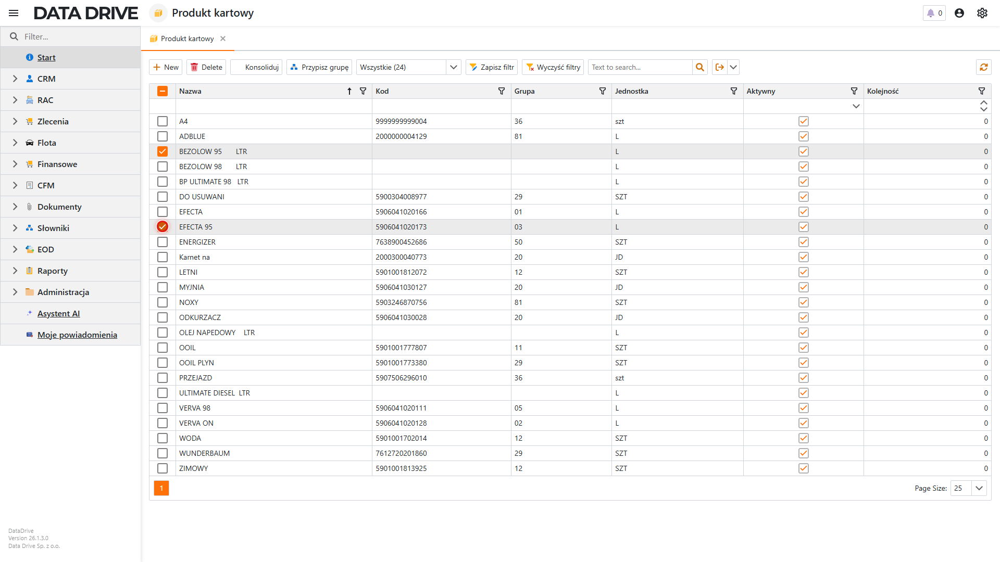
Przypisanie grupy wielu produktom
Aby nadać wielu produktom tę samą grupę, wykonaj następujące kroki:
- Otwórz listę Produkt kartowy.
- Zaznacz co najmniej dwa produkty należące do tej samej grupy.
- Kliknij Przypisz grupę.
- Wpisz nazwę grupy, na przykład Paliwa, i kliknij OK.
Wybrane produkty otrzymają tę samą grupę. Grupa pojawi się jako wymiar na transakcjach i w raportach.
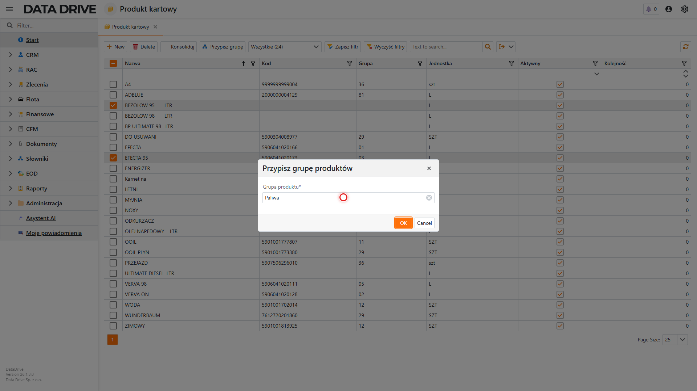
Konsolidacja nazw dostawców
Aby utworzyć jeden produkt ujednolicony, wykonaj następujące kroki:
- Na liście Produkt kartowy zaznacz co najmniej dwa odpowiedniki tego samego produktu.
- Kliknij Konsoliduj.
- W polu Nazwa nowego produktu bazowego wpisz wspólną nazwę, na przykład Benzyna 95.
- Wybierz lub wpisz Grupę produktu, na przykład Paliwa.
- Kliknij OK.
DataDrive utworzy nowy produkt, przeniesie do niego mapowania dostawców i przepnie istniejące transakcje. Kolejne transakcje z tymi samymi nazwami lub kodami dostawców również trafią do produktu ujednoliconego.
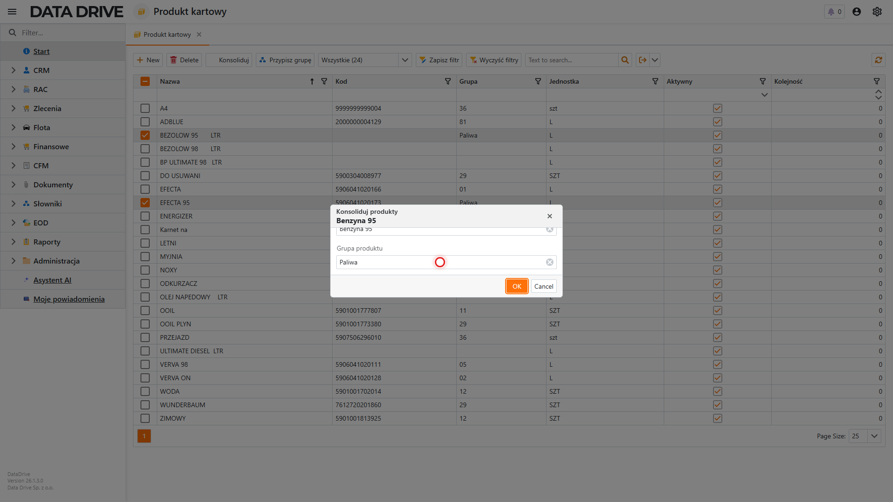
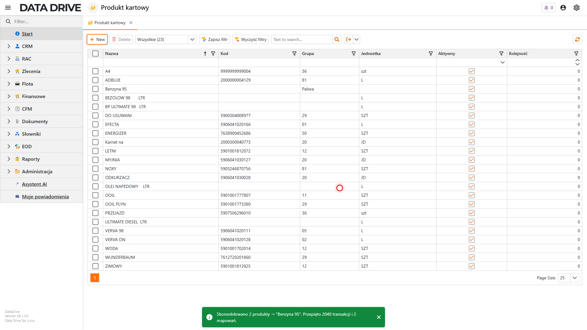
Jak działa kolejny import
Mapowanie zapamiętuje dostawcę oraz jego kod lub nazwę produktu. Gdy kolejny plik albo integracja przekaże transakcję UTA, BP lub Orlen, DataDrive sprawdzi mapowanie i od razu przypisze produkt ujednolicony. Nie musisz ponawiać konsolidacji przy każdym imporcie.
Analiza przed i po ujednoliceniu produktów
Przed konsolidacją analiza grupuje zakupy według nazw zapisanych przez dostawców. Ten sam rodzaj paliwa zajmuje wtedy kilka wierszy lub słupków. Po konsolidacji raport używa produktu ujednoliconego i łączy odpowiadające sobie zakupy.
Przed ujednoliceniem
| Produkt w analizie | Wynik |
|---|---|
| BP — BEZOLOW 95 | osobna seria |
| Orlen — EFECTA 95 | osobna seria |
| UTA — benzyna 95 | osobna seria |
Trzy nazwy utrudniają odczyt całkowitego kosztu benzyny 95.
Po ujednoliceniu
| Produkt w analizie | Wynik |
|---|---|
| Benzyna 95 | jedna wspólna seria |
| Grupa produktu | Paliwa |
| Dostawcy | BP, Orlen i UTA |
Jedna pozycja pokazuje łączną wartość, ale nadal można filtrować po dostawcy.
Aby porównać wynik, najpierw uruchom analizę sumy wartości brutto według produktu dostawcy. Po konsolidacji uruchom ją ponownie według produktu ujednoliconego. Zakres dat i pozostałe filtry muszą być takie same.
Rozbicie po kosztach
Analiza kosztów szczegółowych korzysta z pozycji faktur, a nie z nagłówków dokumentów. Dzięki temu może pokazać, na co wydano pieniądze i kogo obciąża dany koszt.
- Kategoria kosztu
- Łączy podobne wydatki, na przykład paliwo, opony, sprzęt komputerowy albo opłaty drogowe.
- MPK i dział
- Pokazują jednostkę organizacyjną odpowiedzialną za koszt.
- Pojazd
- Pozwala analizować całkowity koszt utrzymania konkretnego samochodu.
- Wymiary
- Umożliwiają dodatkowy podział właściwy dla firmy i rodzaju raportu.
W sekcji analiz wybierz pozycje kosztowe, wartość brutto lub netto oraz grupowanie, na przykład Kategoria kosztu → MPK → Pojazd. Suma pozycji szczegółowych powinna zgadzać się z sumą dokumentów w tym samym zakresie.
Rozpisanie kosztu na kilka pozycji
Jedna pozycja faktury często obciąża kilka działów albo kilka pojazdów. Dostawca wystawia wiersz „Opony — 20 szt.”, a w firmie te opony pojechały na pięć samochodów. Akcja Rozpisz koszt dzieli taką pozycję na części, którym nadajesz własne wymiary: pojazd, dział, MPK i kategorię.
Rozpisanie działa w dwóch krokach: najpierw podajesz, na ile części dzielisz koszt, a potem sprawdzasz i opisujesz wszystkie części przed zapisem.
Krok 1: liczba części
Aby rozpisać pozycję kosztową, wykonaj następujące kroki:
- Przejdź do Finansowe → Kosztowe → Koszty szczegółowo w lewym menu.
- Zaznacz pole wyboru przy jednej pozycji, którą chcesz rozpisać.
- Kliknij Rozpisz koszt na pasku akcji nad listą.
- W oknie Rozbij pozycję na części wpisz liczbę części w polu Na ile części.
- Kliknij Dalej.
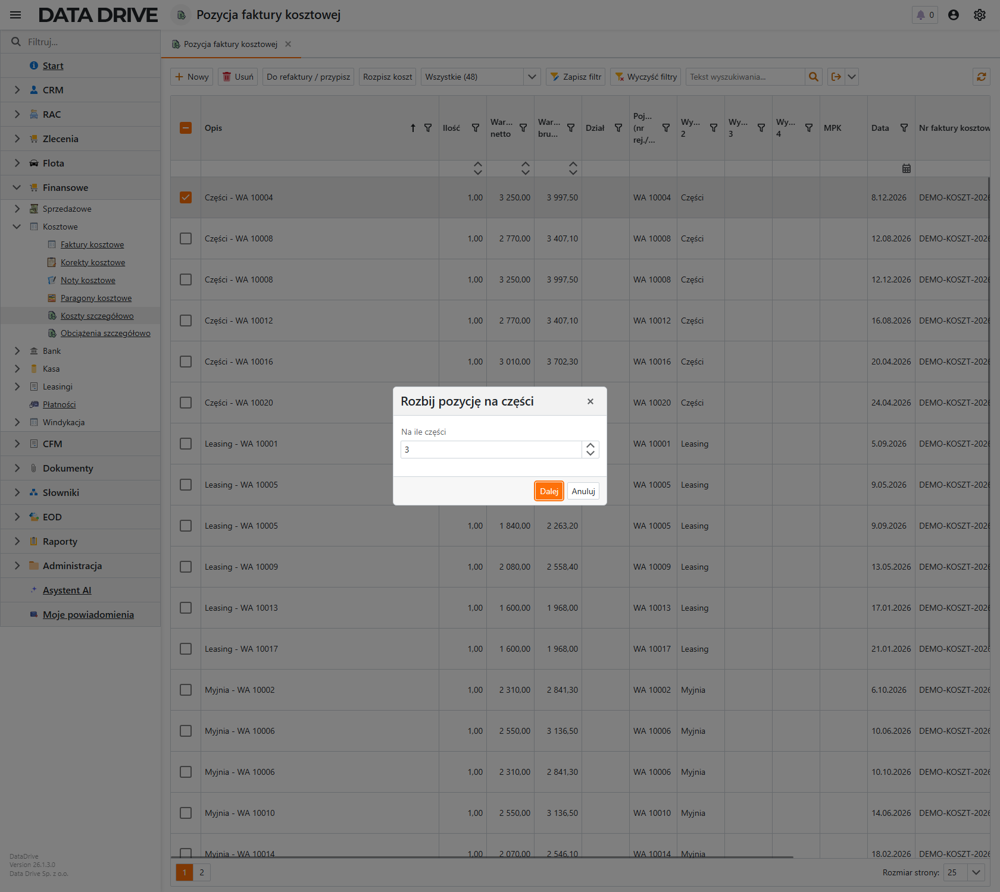
Krok 2: sprawdzenie i opisanie części
Drugie okno pokazuje wszystkie przygotowane części razem z kontrolą sum. Aplikacja dzieli ilość i kwoty po równo, a resztę z zaokrąglenia dopisuje do ostatniej części — dlatego w przykładzie trzecia część ma 1 083,34 zł zamiast 1 083,33 zł.
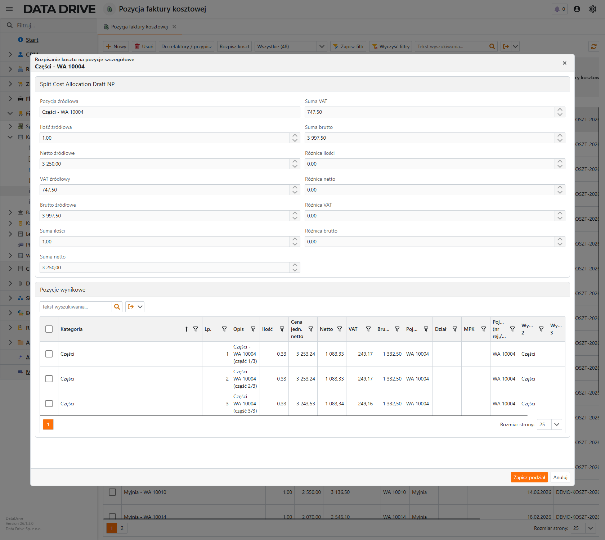
Pola kontrolne w górnej części okna (aplikacja wylicza je wszystkie):
- Pozycja źródłowa
- Opis dzielonej pozycji. Pozostaje ona na liście jako wiersz kontrolny.
- Ilość źródłowa, Netto źródłowe, VAT źródłowy, Brutto źródłowe
- Wartości pozycji przed podziałem. To punkt odniesienia dla sum.
- Suma ilości, Suma netto, Suma VAT, Suma brutto
- Bieżące sumy wszystkich części. Zmieniają się, gdy poprawisz kwotę w którymkolwiek wierszu.
- Różnica ilości, Różnica netto, Różnica VAT, Różnica brutto
- Odchylenie sum od pozycji źródłowej. Wartość 0,00 oznacza, że podział się domyka.
Kolumny siatki Pozycje wynikowe:
- Lp.
- Numer części. Aplikacja nadaje go automatycznie i nie zmienia się przy edycji.
- Opis
- Opis części. Domyślnie jest to opis źródłowy z dopiskiem (część 1/3).
- Ilość, Cena jedn. netto, Netto, VAT, Brutto
- Kwoty części. Zmiana którejkolwiek natychmiast przelicza sumy i różnice u góry okna.
- Pojazd
- Samochód obciążany tą częścią kosztu. Dziedziczy się z pozycji źródłowej.
- Dział
- Jednostka organizacyjna, która ponosi tę część wydatku.
- MPK
- Centrum kosztowe tej części. To jedyne miejsce w aplikacji, w którym nadasz pozycji własne MPK.
- Kategoria
- Rodzaj kosztu części, na przykład Opony albo Sprzęt komputerowy.
- Pojazd (nr rej./VIN), Wymiar 2, Wymiar 3, Wymiar 4
- Wymiary analityczne przeniesione z pozycji źródłowej. Możesz je zmienić osobno dla każdej części.
Aby dokończyć rozpisanie, wykonaj następujące kroki:
- Popraw Ilość i kwoty w wierszach, jeśli podział ma być inny niż równy.
- Uzupełnij w każdym wierszu Pojazd, Dział, MPK i Kategorię.
- Sprawdź, czy wszystkie pola Różnica pokazują 0,00.
- Kliknij Zapisz podział w prawym dolnym rogu okna.
Wynik rozpisania
Po zapisaniu na liście Koszty szczegółowo pojawiają się nowe pozycje — po jednej na każdą część — a pozycja źródłowa zostaje jako wiersz kontrolny.
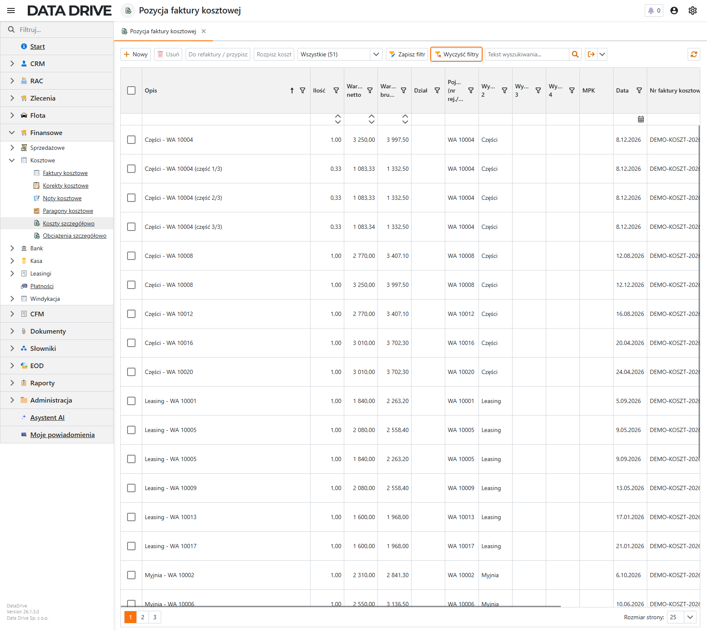
Koszt zostanie rozpisany na części, a każda z nich trafi do analiz z własnym pojazdem, działem i MPK.